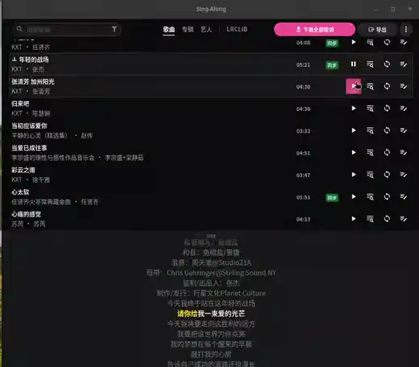
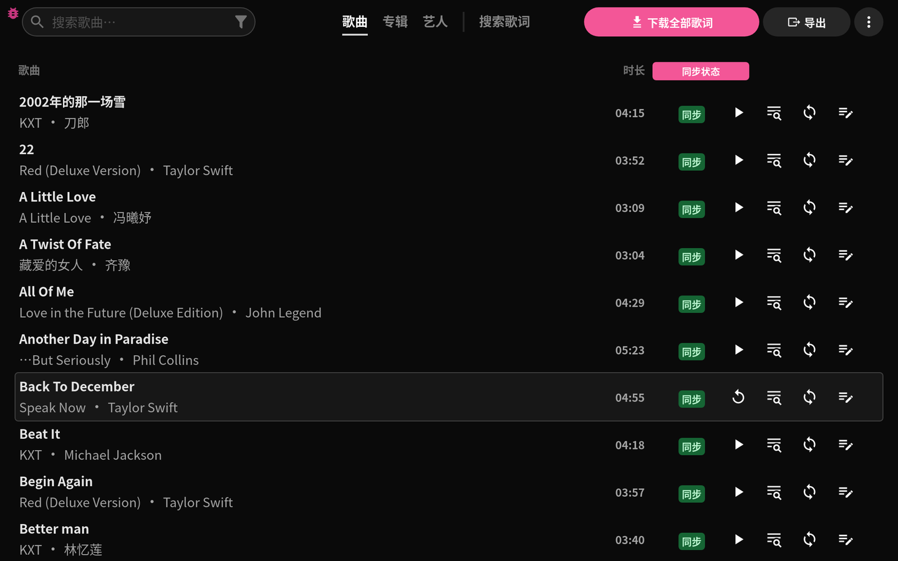
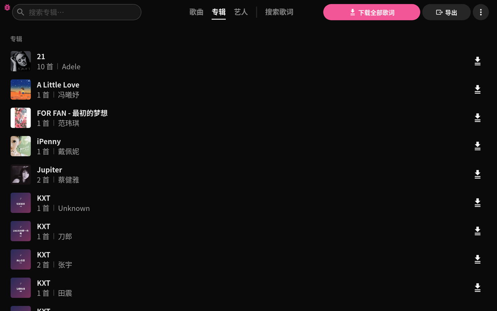
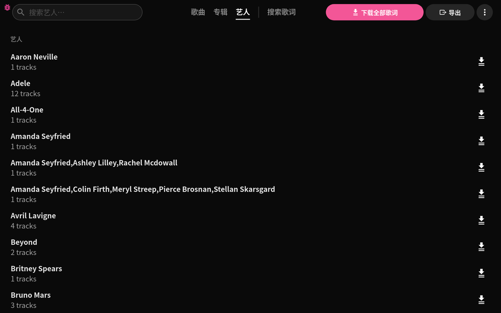
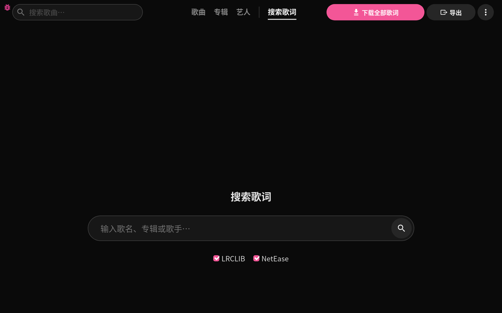

A free desktop music player that finds timed lyrics for your
local files, lets you correct the timing word by word, and
exports them in the formats your phone and car actually read — LRC, enhanced
LRC (A2) and TTML.
Linux · Windows · macOS | MIT licensed | 17 languages
| No account, no subscription, no telemetry


The track list, with the sync status of every file

Albums, with cover art read from the files themselves

Browsing by artist

Searching LRCLIB for a track that has no lyrics yet
What it does
Finds lyrics for a whole library. Batch download with skip rules — overwrite everything, fill only the tracks missing timed lyrics, or only the tracks with no lyrics at all.
Two sources, chosen independently. LRCLIB and NetEase can each be switched on or off; one being unreachable does not abort the run.
Word-level editing. Drag the timing of a line, or individual words, and hear the result as you go.
Script conversion. Simplified ↔ Traditional Chinese, applied on download or at export, never rewriting the words themselves.
Exports that fit the target. Plain LRC, enhanced LRC (A2 word tags) and TTML — the latter is what Steve on iOS and several car head units read for word-by-word display.
Album art. Embedded covers are read and shown, and missing ones can be filled from iTunes or Deezer and written back into the file.
Works on your files. Lyrics are saved next to the audio or embedded in the tags you choose. Nothing is copied into a library of its own.
Also a command line. The same binary runs headless for scripts and coding agents: fetch, export, status, formats.
One statically linked file, no install, no GTK or WebKit needed — the one to
use in a container or on a machine where the player itself cannot be
installed.
curl -LO https://github.com/LeisureLinux/Sing-Along/releases/latest/download/singalong-cli-linux-amd64
chmod +x singalong-cli-linux-amd64
./singalong-cli-linux-amd64 status ~/Music
Windows and macOS builds are unsigned.
Windows SmartScreen asks for confirmation on first run: More info → Run
anyway. On macOS, right-click the app and choose Open, or run
xattr -dr com.apple.quarantine /Applications/Sing-Along.app.
Code signing is applied for through
SignPath Foundation; until it is granted,
these prompts are expected.
How it compares
Sing-Along
Players with lyric panels
Lyric sites & apps
Works on your own files
Yes
Yes
No — streaming catalogue
Corrects word-level timing
Yes
Rarely, line-level at best
No
Exports TTML / A2 for phones and cars
Yes
No
No
Free, no account
Yes, MIT
Varies
Ad-supported or subscription
Who it is for
People with a local music library who want timed lyrics on every track, not just the popular ones.
Anyone whose phone player or car stereo shows lyrics only when the file carries TTML or A2 word timing.
Chinese-language listeners who need Simplified/Traditional conversion without changing the lyrics themselves.
Scripts and coding agents that need lyrics fetched or converted without a GUI — see the skill file and llms.txt.